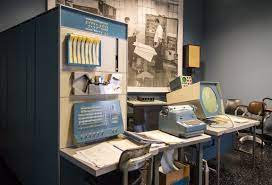
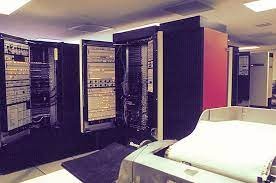
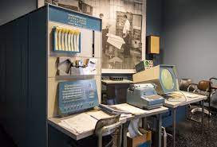
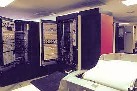

THIRD GENERATION COMPUTERS...!!
- The period of third generation was from 1965-1971.
- The computers of third generation used Integrated Circuits (IC's) in place of transistors.
- A single IC has many transistors, resistors, and capacitors along with the associated circuitry.
- The IC was invented by Jack Kilby. This development made computers smaller in size, reliable, and efficient.
- In this generation remote processing, time-sharing, multi-programming operating system were used.
- High-level languages (FORTRAN-II TO IV, COBOL, PASCAL PL/1, BASIC, ALGOL-68 etc.) were used during this generation.
- Eg. IBM-360 series,
IBM-370/168,
PDP,
Honeywell-6000 series,
TDC-316, etc.
 



Advantages :
- ICs are very small in size as cpmpared to transistors.
Also there was Improved performance of these types of computers.
- Especially, the production cost was cheap as compared to first two generation of computers.
Disadvantages :
- These computers required air condition as they got heated up quickly.
- ICs were also sophisticated.
For more examples click :